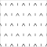


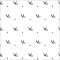
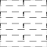
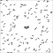
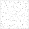
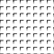


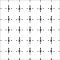
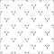

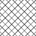
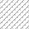
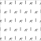
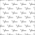
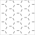


24 symbolen â hiërarchisch gegroepeerd op zoekfilter (V-/B-varianten genegeerd voor groepering)
| Niveau 1 | Niveau 2 | Niveau 3 | Niveau 4 | Symbool (bestand) | Afbeelding | Status |
|---|---|---|---|---|---|---|
| AGR | AGR-BEPLANTING | AGR-BEPLANTING_SOORT | AGR-BEPLANTING_SOORT_01 | AGR-BEPLANTING_SOORT_01-SO |  | neutraal |
| AGR-BEPLANTING_SOORT_02 | AGR-BEPLANTING_SOORT_02-SO | | neutraal | |||
| AGR-BOLLEN | AGR-BOLLEN-SO | | neutraal | |||
| AGR-BOS | AGR-BOS-SO |  | neutraal | |||
| AGR-BOSPLANTSOEN | AGR-BOSPLANTSOEN-SO |  | neutraal | |||
| AGR-GRAS | AGR-GRAS_01 | AGR-GRAS_01-SO |  | neutraal | ||
| AGR-GRAS_GAZON | AGR-GRAS_GAZON-SO |  | neutraal | |||
| AGR-GRAS_GESTABILISEERD | AGR-GRAS_GESTABILISEERD-SO |  | neutraal | |||
| AGR-GRAS_RUIGGRAS | AGR-GRAS_RUIGGRAS-SO | | neutraal | |||
| AGR-GRAS_SPORTVELD | AGR-GRAS_SPORTVELD-SO | | neutraal | |||
| AGR-HEESTERS | AGR-HEESTERS-SO |  | neutraal | |||
| AGR-KRUIDEN | AGR-KRUIDEN-SO |  | neutraal | |||
| AGR-MOERAS | AGR-MOERAS-SO | | neutraal | |||
| AGR-PLANTGATVERBETERING | AGR-PLANTGATVERBETERING_01 | AGR-PLANTGATVERBETERING_01-SO |  | neutraal | ||
| AGR-PLANTGATVERBETERING_02 | AGR-PLANTGATVERBETERING_02-SO |  | neutraal | |||
| AGR-RIET | AGR-RIET-SO |  | neutraal | |||
| AGR-SPORTVELD | AGR-SPORTVELD_GRAS | AGR-SPORTVELD_GRAS_KUNST | AGR-SPORTVELD_GRAS_KUNST-SO |  | neutraal | |
| AGR-SPORTVELD_GRAS_NATUUR | AGR-SPORTVELD_GRAS_NATUUR-SO | neutraal | ||||
| AGR-STRUWEEL | AGR-STRUWEEL-SO |  | neutraal | |||
| AGR-VASTEPLANTEN | AGR-VASTEPLANTEN-SO | | neutraal | |||
| AGR-VERWIJDEREN | AGR-VERWIJDEREN-SO | neutraal | ||||
| AGR-VERWIJDEREN-SOD | | neutraal | ||||
| AGR-WATERPLANTEN | AGR-WATERPLANTEN-SO | neutraal | ||||
| AGR-WISSELBEPLANTING | AGR-WISSELBEPLANTING-SO | | neutraal |